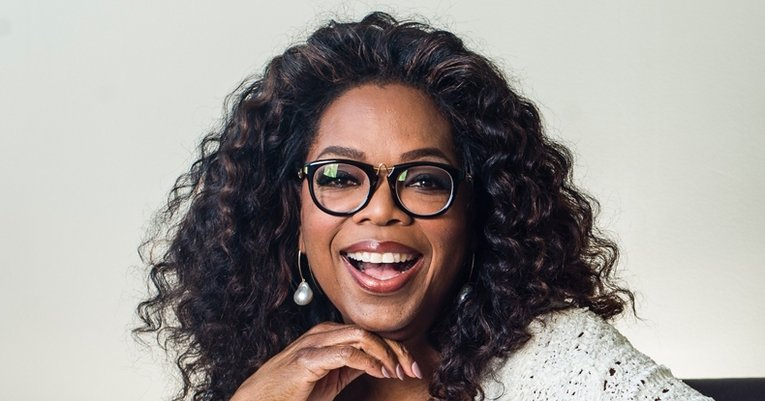

Oprah Winfrey - The Queen of talk

Oprah Winfrey hosting her show
Some Fun Facts
Oprah Winfrey, born "Orpah Gail Winfrey" is best know as the talk show host of the popular Oprah Winfrey Show. What most people might not know is that:
- Oprah Winfrey was born in January 29, 1954 to a single teenage mother in rural Mississippi.
- At age 9, she suffered sexual abuse and she became pregnant at age 14.
- Her son was born prematurely and died shortly after.
- Despite it all, Oprah was an honors student and was voted most popular girl in high school.
- She studied communication at Tennessee University on a full scholarship ride.
- At age 17, she won the Miss Black Tennessee beauty pageant.
- She was both the youngest news anchor and the first black female news anchor at Nashville's WLAC-TV.
- She moved to Baltimore's WJZ-TV in 1976 to co-anchor the six o'clock news.
- In 1977, she was removed as co-anchor and worked lower profile positions at the station.
- In 1983, Winfrey relocated to Chicago to host WLS-TV's low-rated half-hour morning talk show, AM Chicago.
- Within months after Winfrey took over, the show went from last place in the ratings to overtaking Donahue as the highest-rated talk show in Chicago.
- It was renamed The Oprah Winfrey Show, expanded to a full hour and broadcast nationally beginning September 8, 1986
- By the mid-1990s, she had reinvented her show with a focus on literature, self-improvement, and spirituality
Turn your wounds into wisdom
- Oprah Winfrey
Celebrity Interviews
Dubbed the Queen of Talk, Oprah Winfrey has interviewed more celebrities than any talk show host alive. Here are some of the celebrities that have graced the famous 'Oprah's Couch':
- Barack Obama
- Michelle Obama
- Michael Jackson
- Tom Cruise
- Beyoncé
- Kanye West
- Jay Z
Learn more about the excellent talk show host, philanthropist, producer and media mogul that is Oprah Winfrey on her Wikipedia Page.